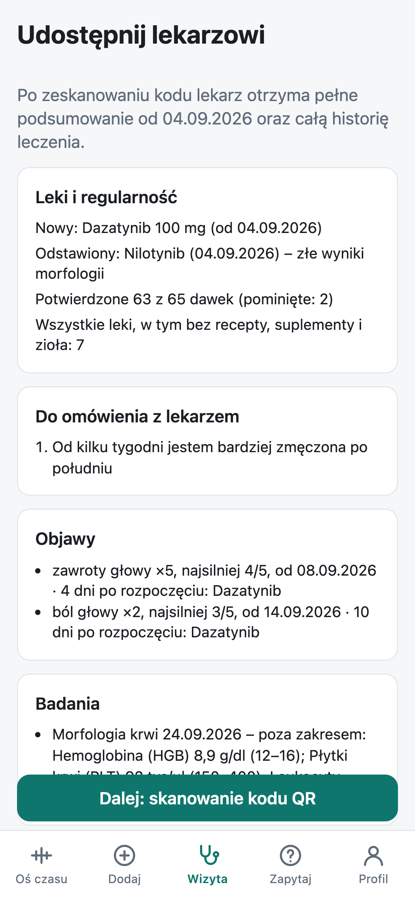
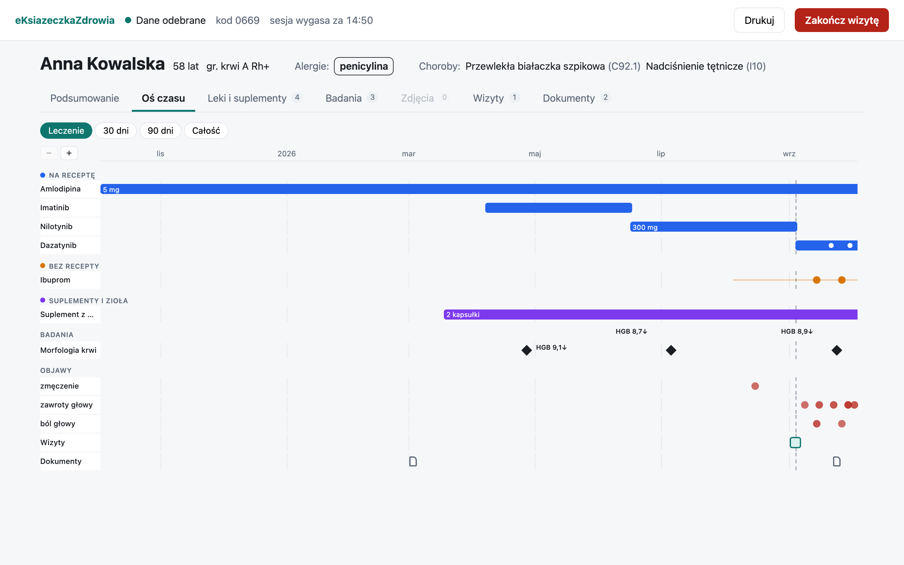

Pacjentka odpowiedziała zgodnie z prawdą. Mimo to lekarze przepisali jej trzy różne leki, zanim zrozumieli, co się dzieje.
eKsiążeczkaZdrowiaHackYeah 2026 · Sport & Healthcare · DropTheBase;
Prawdziwy przypadek
Po każdym nowym leku wyniki krwi były złe
LekarzJakie leki pani przyjmuje?
Pani AnnaTe, które pan doktor przepisał.
Lekarze szukali przyczyny w lekach, bo tylko o nich wiedzieli.
Leczenie białaczki · 2026Co widzi lekarz
Case study z medycznej konferencji naukowej. Imię, daty i wyniki zmienione.02
Czego zabrakło w wywiadzie
Przez cały czas brała suplement z grzybów
Codziennie od marca. Nie uważała go za lek, więc nie wspomniala o nim w wywiadzie.
Lekarze dowiedzieli się o nim przypadkiem, od jej córki.
Okazało się, że każdy kolejny lek wchodził z nim w interakcję.
Leczenie białaczki · 2026Pełny obraz
Lekarz pytał o leki, więc usłyszał o lekach.
To zdarza się często
IKP zna recepty. Reszty lekarz zwykle nie widzi.
70,6%
dorosłych Polaków bierze suplementy, regularnie albo od czasu do czasu
1 na 5
pacjentów mówi lekarzowi o tym, co bierze bez recepty
~50%
osób biorących suplementy łączy je z lekami na receptę
Źródła: 70,6% – S. Sierpiński, badanie na reprezentatywnej próbie 5006 dorosłych Polaków, XII 2024 (za leki.pl).
1 na 5 i ~50% – Gdański Uniwersytet Medyczny, „Scientific Reports”, 2026, ok. 800 uczestników (za tvn24.pl).
eKsiążeczkaZdrowia04
Rozwiązanie
Aplikacja pyta o to, o czym pacjent by nie wspomniał
Suplementy i inne rzeczy
1„Bierzesz coś jeszcze?”
Przy dodawaniu leku aplikacja dopytuje o suplementy, zioła i herbatki.
2Wszystko na jednej osi czasu
Leki z recepty, suplementy, objawy i wyniki badań.

3Pokazujesz lekarzowi
Skan kodu QR, bez konta i instalacji po stronie lekarza.
Rejestr 20 248 leków działa offline · import dokumentów z IKP · zdjęcie wyniku z kartki
eKsiążeczkaZdrowia05
Wizyta
Lekarz od razu widzi historię pacjenta.

Suplement brany przez całe leczenie
Lekarz otwiera stronę
Wystarczy zwykła przeglądarka w gabinecie. Bez konta i bez instalowania czegokolwiek.
Pacjent skanuje kod QR
Na obu ekranach pojawia się ten sam kod. Jeśli się zgadza, nikt się nie podpiął po drodze.
6123
Po wizycie dane znikają
Lekarz widzi sprawy od pacjenta, leki i oś czasu. Po zamknięciu karty nic u niego nie zostaje.
eKsiążeczkaZdrowia06
Zostaje jedno pytanie
Prosimy o wszystko, więc nie trzymamy niczego
18,8 mln
Polaków, których może dotyczyć wyciek z systemu MyDr (sierpień 2026). PESEL, wizyty, recepty, ok. 12 tys. placówek.
Telefon pacjenta
Jedyne miejsce z danymi. Baza zaszyfrowana kluczem z PIN-u.
Serwer jak listonosz
Przenosi zaklejoną kopertę. Nie ma klucza i nic nie zapisuje.
Przeglądarka lekarza
Dane są tylko w otwartej karcie.
AI też nie dostaje danych: model zamienia pytanie na filtr, wyszukiwanie odbywa się w telefonie.
Źródła: cyberdefence24.pl, zaufanatrzeciastrona.pl, komunikat Ministerstwa Cyfryzacji07
Czym się różnimy
Nikt nie łączy tych trzech rzeczy
mojeIKP
Bearable, CareClinic
eKsiążeczkaZdrowia
Widok dla lekarza przez QR, bez konta i instalacji
✕
eksport PDF
✓
Dane tylko w telefonie, bez centralnej bazy
✕
chmura
✓
Leki z recepty i suplementy na jednej osi czasu
✕
częściowo
✓
Działa dziś
Rejestr 20 248 leków działa offline
Baza w telefonie zaszyfrowana kluczem z PIN-u
Przekazanie lekarzowi przez QR z kodem weryfikacyjnym
Widok lekarza w zwykłej przeglądarce
Wpisy i pytania o historię głosem
Następny krok
Pilotaż w poradni z pacjentami, którzy biorą wiele leków
Aplikacja natywna: powiadomienia i rozpoznawanie mowy w telefonie
Integracja z IKP, gdy udostępni API
MyHealth@EU dla wizyt za granicą
eKsiążeczkaZdrowia08
Wdrożenie
Zaczynamy od pacjentów, którzy biorą najwięcej leków
Pacjenci z wielolekowością
Onkologia, hematologia, choroby przewlekłe. Tam interakcje są najgroźniejsze.
Opiekunowie
W historii Pani Anny o suplemencie wiedziała córka. Opiekun może prowadzić książeczkę za rodzica.
Lekarz jako kanał
Lekarz prowadzący poleca aplikację, bo skraca mu wywiad.
Prawie zerowy koszt utrzymania – serwer niczego nie przechowujeNie diagnozujemy, pokazujemy – decyzja zostaje u lekarza
eKsiążeczkaZdrowia09
Demo
Zobaczcie to sami
Gdyby Pani Anna miała eKsiążeczkęZdrowia, lekarz zobaczyłby suplement już na pierwszej wizycie.
Szukamy poradni, w której przetestujemy aplikację z lekarzami i pacjentami.